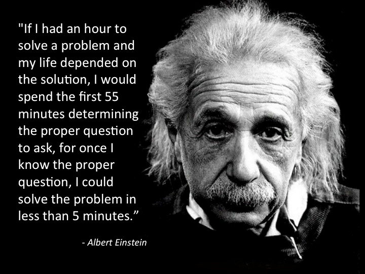

Stack Overflow(ed) with Intelligent Questions?
07 Sep 2023
“If there are no stupid questions, then what kind of questions do stupid people ask? Do they get smart just in time to ask questions?” - Scott Adams (American author, cartoonist)
A Question Can Be … Smart?
Asking questions is much like using a calculator… it is only as smart as its user. One can have the fanciest TI-Nspire CAS II engineering calculator, but it will only be able to perform its enhanced functions if the user knows how to use and implement them. I believe that inquiries occur and behave much in the same manner. The way in which a question is asked will decide how the output (its answer) performs.
In general, asking questions can be difficult, yet rewarding. It’s not only one of the most fundamentally key aspects to one’s learning, but it is also an important skill to have in order to expand in the knowledge of a particular subject. By seeking help from others, one is able to view the otherwise confusing concepts from a new or fresh perspective. It is this component of collaboration that enables deeper levels of thinking and comprehension of the material. In order to get to such an extensive level, however, one must be able to “ask” their way there through smarter questions.
The Basics of Smart Questions
How To Ask Questions the Smart Way by Eric Steve Raymond describes how to generate questions that are more impactful and significant, especially within the tech community. The following summarizes the basic principles and foundations of developing “smart” questions.
Smart questions:
- Are specific, thought-provoking questions : There is generally no straightforward answer. The answer requires some deep critical thinking and profound thought. This helps the community to engage with each other and view topics from multiple approaches via everyone’s unique perspectives.
- Shows willingness to learn : The question portrays that the user has tried multiple methods and overall contributes to the development of the learning community.
- Shows effort in doing previous searching : One can’t find a direct answer from a quick Google search
- Asks for guidance to lean in the right direction : The question does not demand for a solution to the answer, but perhaps rather implies for some suggestive tips to point in the right direction toward the answer. This can possibly include asking for a conceptual explanation of how the error occurred.
- Can simply be identified or narrowed down : The question identifies a distinct, explicit problem, so that the reader can understand what actual error is. It is not too open-ended or generalized, but it can be if the question relates to material on a conceptual level.
- Provides sufficient context : There is enough context for others to realize how an error occurred. This mainly involves including specific descriptions of the technologies that were used. The question can be based on a personal encounter, but should also be more generalized, so that others can find the question helpful when encountering a similar situation.
Why Does It Matter?
To put it simply, smart questions matter because it saves time. In the fast-paced environment that we live in today, the concept of time has been highly valued as something that is precious in our daily lives. Society is hyper-focused on maintaining busy lives to utilize their time efficiently. As a result, an exchange of meaningless inquiries and answers that beat around the bush, loop back in circles, and result in going nowhere will merely be deemed as a painful time-killer, or perhaps a pestering obstacle in the way of our other tasks.
Smart Software Engineering
This is more importantly prevalent in the tech industry and the general ubiquitous scope of software engineering. The rapid and instantaneous development of new technologies will mean that we, as software developers, will not have enough time to keep up and learn how everything works. Being able to communicate effectively through cooperation will hence be the main key to our success in the field. One way in doing so is by asking these “smart” questions: the important questions that will allow us to adapt to such environments with quick intensity, expand the community of critical thinkers, understand the main aspects of new technologies, and deepen our relationship with the technologies used in our lives. The possibilities that are rooted from these “smart” questions can lead to thought-provoking ideas and extensive innovations, since all of us, in one way or another, shape the future of technology.
In a more practical sense, asking smart questions improves the overall IQ or level of thinking within a community. Smart questions can help improve the work progress of group-based software projects, so that everyone is on the same page in understanding how their role fits within the project. It can also speed up the process of debugging, since other collaborators will be able to understand what is going on in the code or system software. This will allow implementations between other aspects of the project to become more cohesive. Another possible benefit that can result from smart questions include more help and support from external developers who can deviate or make enhanced modifications to the original source code. Overall, smart questions require resourcefulness, meaning that there is more time to get things done efficiently. With every developer coming from different backgrounds and levels of expertise, smart questions help us gauge a general understanding with each other. The work flow within a software project can end up being much so much smoother with inquiries that are critically-thought out.
Examples of “Smart” and “Stupid” Questions
Smart Questions Only!
Upon reviewing Stack Overflow, a website containing community forums relating to programming questions, I was quickly able to find some examples that represent these smart questions. The following question includes and utilizes the guidelines that Raymond mentions in How To Ask Questions the Smart Way.
Question:
I have a README.md file for my project underscore-cli, and I want to document the --color flag.
Currently, the only way to do this is with a screenshot (which can be stored in the project repository):
(Picture of screenshot is included)
But screenshots aren't text, preventing readers from copy/pasting the command in the screenshot.
They're also a pain to create / edit / maintain, and are slower for browsers to load. The modern web uses text styles,
not a bunch of rendered images of text.
While some Markdown parsers support inline HTML styling, GitHub doesn't; this doesn't work:
<span style="color: green"> Some green text </span>
This doesn't work:
<font color="green"> Some green text </font>
From this example on adding color to GitHub ReadMe.md files , the user simply addresses the question in the header. It is a broad topic which other users might want to know how to do. Within the post contains parameters to the problem. In the user’s description, they describe their situation with a linked repository, an appropriate screenshot, and simplified source code for specific details relating to their situation. The user also shows their willingness to learn by mentioning the only possible solution that they found and explaining why they find this method to be tedious. They also mention other methods that they have tried, but didn’t work, and come up with suggestions that have triggered the problem. Although not explicitly stated, the inquirer implicitly asks for tips that could point them towards a more effective method.
Response:
One way to add color to a README is by utilising a service that provides placeholder images.
For example this Markdown can be used:
-  `#f03c15`
-  `#c5f015`
-  `#1589F0`
To create a list of any colors you like:
#f03c15
#c5f015
#1589F0
As a result, the main response to this question highlights the effectiveness of the asked question to begin with. The respondent mentions a specific suggestion along with some example code and a link to coloring text using placeholders. The answer is concise, but beneficial in pointing the user toward the right direction.
Link to StackOverflow Question: Adding Color to GitHub ReadMe.md File
There are plenty of smart questions that I found while searching on Stack Overflow, but I chose this question in particular because I found it helpful in applying it to my situation. I was able to use this question to help myself learn more about coloring text on GitHub pages, after encountering a similar problem related to GitHub markdown documentation. From this, the smartness of this question allowed me, an outsider of the community, to enhance my knowledge of web development.
Digging Deep Into Archives
There was some difficulty in finding questions that are not best represented to be “smart.” This is mainly because authors and other contributors on Stack Overflow tend to delete these types of forum posts if the question is not relevant to the programming community, or if it doesn’t get answered after a long period of time. After deeply searching through its archives, however, I was able to find several closed threads pertaining to “bad” or “stupid” questions. The following examples include posts of issues that occurred from a very long time ago (almost a decade), which may or may not be prevalent today, but nevertheless demonstrate how to not ask a smart question.
In the example below, a user was having trouble deleting elements in the array using array splice in JavaScript. The user provides little to no context of what they are trying to accomplish. Although some code is added to explain the area in which the possible code error occurred, there is not enough background information to consider other possibilities of the error occurring on their end.
-
Question: So, i have an array of pfps: ["63c959f37337160e2de8b7e4/20230122173537/profilepicture.png","63c959f37337160e2de8b7e4/20230122173616/profilepicture.png"] And, i want to remove "63c959f37337160e2de8b7e4/20230122173616/profilepicture.png" from the list. But when i run this code: let foundPfp = await pfps.find((pfp: any) => pfp === data.pfpId) if (foundPfp != -1) pfps.splice(foundPfp, 1) then it removes "63c959f37337160e2de8b7e4/20230122173537/profilepicture.png" Can you tell me why? Thanks!
From this question, we can see that the user is blunt in wanting to know the exact solution to their instance. It is also too specific to the user and doesn’t provide enough context for its specificity, so others will probably not benefit from the post, even if future similar problems are encountered.
-
Response: Not sure if this helps, but... Removing the first element from an array let foundPfp = await pfps.find((pfp: any) => pfp === data.pfpId); foundPfp.shift(); console.log('first element removed', foundPfp); or if you want to remove a specific element from an array: const pfps = ["63c959f37337160e2de8b7e4/20230122173537/profilepicture.png","63c959f37337160e2de8b7e4/20230122173616/profilepicture.png"] const indexOfElementToRemove = pfps.indexOf("63c959f37337160e2de8b7e4/20230122173537/profilepicture.png"); pfps.splice(indexOfElementToRemove, 1); console.log(pfps);
Although one of 3 given answers resolved the person’s case, the answer was mainly a suggestion due to the lack of context. With words along the lines of “Not sure if this helps, but…,” the respondent had to assume and guess the user’s specific case, fortunately resulting in the right one. In the end, there is a lot of unresolved confusion when other outside community members view this question.
Link to StackOverflow Question: Deleting Elements Using Array Splice in JS
More “Stupid” Questions
-
This post relating to a JavaScript program on Grammar Checking is very similar to the previous example mentioned. Although the inquirer mentions their main intentions with the program and provides the source code for it, the prompt merely asks to debug the code for them. It suggests a desperate plea of solving the problem for the user, making the overall question seem “lazy” and implying that the user lacks the effort in attempting to solve it themselves. One of the two responses ended up solving the issue. However, this required the respondent to assume certain things (“This is probably roughly what you’re looking for”). It also included a sly remark of suggesting that the user learn the basics first, guiding the user in being more resourceful (“You should invest some time in learning javascript basics, and use tools like JSLint to check your syntax in the future.”)
Link to StackOverflow Question: Grammar Checking on JS
-
Other examples include a simple misspelled syntax error when pulling code into an external script file, which indicates a lack of effort in attempting to solve the error beforehand. A post containing a javascript file in HTML is also another bad example, since it provides vague context and broad generalization. The answers to the respective questions suggest common solutions based on previous assumptions.
Link to StackOverflow Question: Pulling into an External Script File in JS
Link to StackOverflow Question: Including a JavaScript File in HTML

Thoughts on the “Stupid” Questions
Even though all of these situations resulted in resolved answers, the responses to such questions reflected a lack of “smartness”. A majority of these instances involved a waste of the respondent’s time and mainly boiled down to simple errors that could have taken minutes or seconds to solve, had the user either provided enough context or put in some form of minimal effort in attempting to solve it themselves. Furthermore, the posts that these types of questions contain fail to provide future benefit to other readers in the community, which diminishes the expansive knowledge that a community can collectively grow in the long run.
A New Approach to Asking Questions
From this module, I have learned that there are many types of questions that can be formed. Within Stack Overflow, I noticed that there are questions relating to more conceptual material on software, while there are others that involve more specific cases in optimizing a software’s utilization. In any case, the determining factor that distinguishes a “good” question from a “bad” one is the value that one can individually get from the given answer. That is, the wording, phrasing, and parametrial context of the question dictates the general “thresholds” of how effective a question actually is. Ultimately, a smart question simplifies down to this: Did we get the answer we were looking for, or one that we can accept, without wasting anyone’s time? If we can comfortably confirm this is the case, and can consistently or habitually ask inquiries on this type of level, then I think we are both well on our way to a bright future in tech. The influence that we have on tech as a whole can be pushed by the boundaries of these “smart” questions.